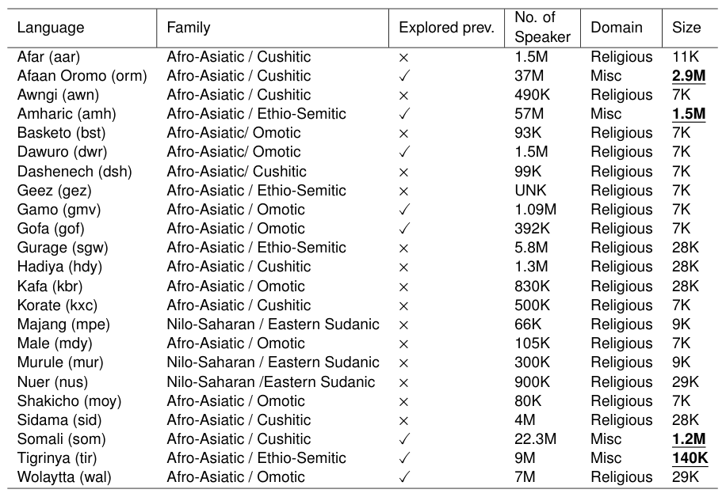
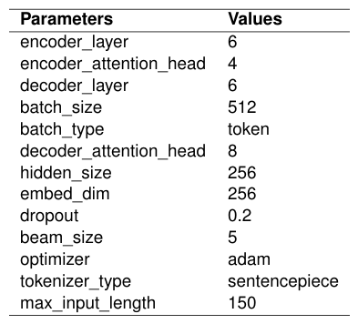
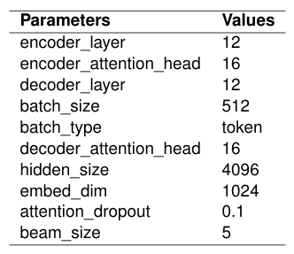

RAIL 2024Traduction automatique
EthioMT: Corpus parallèle pour les langues éthiopiennes à faibles ressources
Traduction automatique, non relue par un humain. L'article original est la version de référence ; les phrases soulignées sont celles dont les contrôles automatiques n'étaient pas sûrs.
Proceedings of the Fifth Workshop on Resources for African Indigenous Languages @ LREC-COLING 2024.
Traduction par Ernst van Gassen (Arktos AI Lab), sous licence CC BY-NC 4.0 comme l'original. Réutilisation permise avec attribution, à usage non commercial uniquement. Les auteurs originaux n'ont pas relu ni approuvé cette traduction.
Texte brut réutilisable, avec sa licence : Français · LICENCE
Affiliations
♣ University of Colorado Colorado Springs, USA

Résumé
Les recherches récentes dans le traitement du langage naturel (NLP) ont atteint des performances impressionnantes dans des tâches telles que la traduction automatique (MT), la classification des nouvelles et la réponse aux questions dans les langues à ressources élevées. Cependant, les performances de la TA laissent beaucoup à désirer pour les langues peu dotées. Cela est dû à la plus petite taille des corpus parallèles disponibles dans ces langues, si de tels corpus sont disponibles. Le TAL dans les langues éthiopiennes souffre des mêmes problèmes en raison de l'indisponibilité de jeux de données publiquement accessibles pour les tâches de TAL, y compris la TA. Pour aider la communauté de recherche et favoriser la recherche sur les langues éthiopiennes, nous présentons EthioMT - un nouveau corpus parallèle pour 15 langues. Nous créons également un nouveau benchmark en collectant un jeu de données pour les langues mieux étudiées en Éthiopie. Nous évaluons le corpus nouvellement collecté et le jeu de données de banc d'essai pour 23 langues éthiopiennes en utilisant des approches de transformeur et d'ajustement fin.
Mots-clés
Corpus parallèle, EthioMT, Traduction automatique, langue à faibles ressources, langues éthiopiennes
1. Introduction
Ces dernières années, grâce aux progrès des approches d'apprentissage profond, tels que le développement des transformeurs (Vaswani et al., 2017), la traduction automatique (TA), une tâche centrale dans le traitement automatique des langues (TAL), a montré des améliorations dramatiques en termes de couverture et de qualité de traduction (Wang et al., 2021). Il est bien connu qu'une condition essentielle pour faire progresser la MT est la disponibilité de corpus parallèles. La disponibilité de corpus parallèles est également nécessaire pour faciliter l'intégration de langues dans des applications de TA comme Google Traduction, Bing et DeepL (Van der Meer, 2019). La majorité des langues dans le monde n'ont pas accès à de tels outils de traduction, car seules quelques langues à ressources élevées ont reçu une attention significative (Tonja et al., 2023b).
La plupart des modèles et méthodes développés pour les langues bien dotées ne fonctionnent pas bien dans les contextes peu dotés (Costa-jussà et al., 2022; Tonja et al., 2023b; King, 2015). Les langues peu dotées ont également souffert des conceptions des technologies du langage (Joshi et al., 2019; Tonja et al., 2022). La création de nouvelles méthodes puissantes pour les applications linguistiques est difficile lorsque les ressources sont limitées et que seule une petite quantité de données, même non étiquetées, est disponible. Le problème est exacerbé lorsqu’il n’existe pas d’ensemble de données parallèle pour des langues spécifiques (Joshi et al., 2020; Ranathunga et al., 2023; Adebara et Abdul-Mageed, 2022).
L'Éthiopie est un pays qui se distingue par sa remarquable diversité culturelle et linguistique, avec plus de 85 langues parlées (Woldemariam, 2007). Seules quelques langues d'Éthiopie ont reçu de l'attention dans le domaine de la recherche en TAL et du développement d'applications. La plupart des langues ont été laissées pour compte en raison de la limitation des ressources (Costa-jussà et al., 2022; Tonja et al., 2023b). Il est difficile de trouver des jeux de données accessibles au public pour les langues éthiopiennes afin de mener des recherches en TAL, car de nombreux chercheurs ne rendent pas leurs jeux de données accessibles au public (Tonja et al., 2023b). L'absence d'ensembles de données et de résultats de référence pour les tâches de TALN, y compris la TA, rend la recherche très difficile pour les nouveaux venus et les parties intéressées. Ceci est évidemment plus difficile pour les langues avec des données limitées sous différentes formes numériques.
Cet article présente EthioMT : un corpus parallèle pour les langues éthiopiennes à faible ressource couplées à l'anglais, ainsi qu'un ensemble de données de référence et des résultats expérimentaux pour 23 langues éthiopiennes. Nos contributions sont les suivantes : (1) Nous créons un nouveau corpus parallèle pour 15 langues éthiopiennes couplées à l'anglais. (2) Nous présentons le premier jeu de données de banc d'essai et les premiers résultats pour les langues éthiopiennes relativement mieux dotées en ressources (amharique, afaan oromo, tigrigna et somali). (3) Nous évaluons la performance MT avec le nouveau corpus et présentons les résultats de référence. (4) Nous mettons à disposition en open-source le corpus parallèle pour favoriser la collaboration et faciliter la recherche et le développement dans les langues éthiopiennes à faible ressource.
2. Travaux connexes
Les langues éthiopiennes sont classées comme des langues à ressources limitées en raison de l'indisponibilité des ressources pour les tâches de TAL, y compris la TA (Tonja et al., 2023b). Bien que la TA soit un domaine mieux étudié pour les langues éthiopiennes par rapport à d'autres applications de TAL (Tonja et al., 2023b), seules quelques langues ont reçu une attention adéquate de la part des chercheurs.
Langues étudiées Comparées aux autres langues éthiopiennes, les langues suivantes ont reçu une attention significative de la part des chercheurs. Néanmoins, les corpus recueillis ne se trouvent pas à un seul endroit. Il est difficile de trouver des jeux de données de banc d'essai dans ces langues, ainsi que des jeux de données et des résultats associés pour reproduire et comparer les approches de TA.
Amharique - Des chercheurs ont collecté des jeux de données parallèles et proposé différentes approches de TA pour la traduction amharique-anglais (Kenny, 2018; Teshome et Besacier, 2012; Hadgu et al., 2020; Ashengo et al., 2021; Biadgligne et Smaïli, 2022; Belay et al., 2022; Gezmu et al., 2021b,a; Biadgligne et Smaïli, 2021).
Afaan Oromo - De même, des tentatives ont été faites pour créer des ensembles de données de TA Afaan Oromo-anglais (Meshesha et Solomon, 2018; Solomon et al., 2017; Adugna et Eisele, 2010; Chala et al., 2021; Gemechu et Kanagachidambaresan, 2021).
Tigrinya - Pour la traduction automatique Tigrinya-Anglais, des chercheurs ont tenté de créer des jeux de données parallèles (Tedla et Yamamoto, 2016, 2017 ; Berihu et al., 2020 ; Azath et Kiros, 2020 ; Kidane et al., 2021).
MT multilingue Certains chercheurs ont inclus les langues éthiopiennes avec d'autres langues dans les systèmes de MT multilingues. Lakew et al. (2020) ont collecté et créé des résultats de référence pour cinq langues africaines, y compris celles mentionnées ci-dessus en Éthiopie. Costa-jussà et al. (2022), Goyal et al. (2022) et Fan et al. (2021) ont inclus des langues éthiopiennes dans leurs modèles de TA multilingues et leurs ensembles de test de banc d'essai. Vegi et al. (2022) ont extrait un jeu de données parallèle multilingue pour les langues africaines, y compris l'amharique et l'afaan oromo d'Éthiopie.
D'autres langues Des efforts ont été déployés pour créer et collecter des ensembles de données de MT pour d'autres langues éthiopiennes. Par exemple, Tonja et al. (2021) ont présenté un corpus parallèle pour quatre langues éthiopiennes à faibles ressources (Wolaita, Gamo, Gofa et Dawuro).
3. EthioMT
3.1. Discussion des langues
Dans cette section, nous énumérons les langues incluses dans le corpus EthioMT. Les langues incluses dans le corpus EthioMT appartiennent aux familles de langues afro-asiatiques et nilo-sahariennes.
3.1.1. Famille des langues afro-asiatiques
La famille de langues afro-asiatiques comprend environ 250 langues parlées en Afrique du Nord, dans certaines parties de l'Afrique subsaharienne et au Moyen-Orient. Les langues appartenant à cette famille sont regroupées en six sous-groupes : Berbère, Tchadique, Couchitique, Égyptien, Omotique et Sémitique (Epstein et Kole, 1998). EthioMT contient des langues appartenant aux sous-groupes Omotique, Couchitique et Sémitique.
1) Les langues omotiques sont un groupe de langues parlées dans le sud-ouest de l'Éthiopie, dans la région de la rivière Omo. Le script Ge'ez est utilisé pour écrire certaines des langues omotiques et le script latin pour d'autres (Amha, 2017). Les langues appartenant à ce groupe que nous avons incluses dans EthioMT sont données ci-dessous.
Le basketo est parlé dans le woreda spécial de Basketo de l'État régional du Sud de l'Éthiopie. La langue basketo est aussi appelée Basketto, Baskatta, Mesketo, Misketto, et Basketo-Dokka. Les locuteurs appellent la langue "Masketo", tandis que leurs voisins l'appellent "Basketo". La langue a deux dialectes, Doko (Dokko) et Dollo (Dollo).
Le dawuro est une langue parlée par environ 1,09 million de personnes dans la zone de Dawro, dans la région des peuples du sud-ouest de l'Éthiopie. Il est également connu sous le nom de Dauro, Dawragna, Dawrogna, Ometay, Cullo ou Kullo. La langue a quatre dialectes: Konta, Kucha, Longkhai, et Yawngkon.
Le gamo est parlé par environ 1,63 million de personnes dans la zone Gamo de l'État régional du Sud de l'Éthiopie. Les locuteurs appellent la langue Gamotstso.
Gofa désigne la langue parlée dans la zone de Gofa de l'État régional du Sud de l'Éthiopie, avec environ 392 000 locuteurs.
Le Kafa, également connu sous le nom de Kefa ou Kafi noono, est une langue omotique du Nord parlée en Éthiopie. Il est parlé par environ 830 000 personnes dans la zone de Keffa, dans la région des peuples du sud-ouest de l'Éthiopie. La langue est principalement parlée dans et autour de la ville de Bonga.
Le male est parlé dans la région d'Omo en Éthiopie. Les Male maintiennent vigoureusement leur langue malgré l'exposition aux pressions et aux langues extérieures.
Le shakicho, également connu sous le nom de mocha, shakacho ou shekka, est parlé dans la zone de Sheka, dans le sud-ouest de l'Éthiopie. Il est étroitement lié à Kafa. Des mots empruntés au majang et à l'amharique influencent le vocabulaire de la langue.
La wolaytta est une langue omotique du nord parlée par le peuple welayta dans la zone wolayita en Ethiopie. On estime que 2 millions de personnes parlent le wolaytta.
2) Les langues couchitiques sont parlées principalement dans la Corne de l’Afrique, y compris Djibouti, l’Érythrée, l’Éthiopie, la Somalie et le Kenya (Comrie, 2002). Les langues couchitiques utilisent les scripts latin et guèze. Les langues appartenant à cette famille qui sont incluses dans le groupe EthioMT sont discutées ci-dessous.
L'afar est parlé par le peuple Afar en Éthiopie, en Érythrée et à Djibouti. Il est également connu sous le nom d'Afar Af, Afaraf et Qafar af. Environ 1,5 million de personnes parlent l'Afar, la langue la plus proche du Saho.
Afaan Oromo, également connu sous le nom d'Oromo, est parlé par environ 37 millions de personnes en Éthiopie, au Kenya, en Somalie et en Égypte. C'est la troisième langue la plus parlée en Afrique et la plus grande langue du groupe couchitique en termes de locuteurs. Les Oromos sont le plus grand groupe ethnique en Éthiopie et représentent plus de 40 pour cent de la population.

Tableau 1 : Langues et détails du jeu de données pour le corpus EthioMT. Il indique les langues, les familles de langues, le nombre de locuteurs, le domaine et la taille du jeu de données collecté. Dans la colonne du domaine, Misc indique un corpus mixte collecté à partir de sources religieuses, d'actualités et d'autres sources. Une taille en gras et soulignée indique un jeu de données collecté à partir de différents dépôts et travaux publiés et fusionné en un seul jeu de données pour la langue afin de créer un banc d'essai.
Awngi est une langue couchitique centrale parlée par environ 400 000 personnes dans le nord-ouest de l'Éthiopie. Il est également connu comme Awiya, Awi, Agaw, Agau, Agew, Agow, Awawar et Damot. La plupart des locuteurs vivent dans la zone d'Agew Awi de la région d'Amhara. Awngi est une langue afro-asiatique parlée dans certaines parties de la zone Metekel de la région de Benishangul-Gumuz.
Dashenech est aussi connu comme Dasenech, Daasanech, ou Daasanach. Le peuple Daasanach le parle en Éthiopie, au Soudan du Sud et au Kenya. Les Daasanach vivent principalement dans la vallée de la Basse-Omo, dans le sud-ouest de l'Éthiopie, le long de la rive orientale du lac Turkana au Kenya, et dans certaines parties du Soudan du Sud.
Le hadiya est parlé par le peuple hadiya d'Éthiopie. La langue est également connue sous les noms de hadiyyisa, hadiyigna, adiya, adea, adiye, hadia, hadiya et hadya. Il s'agit d'une langue cushitique de l'Est des hauts plateaux. Le peuple hadiya est un groupe indigène ancien dans la partie sud de l'Éthiopie. Il y a 1,4 million de locuteurs de la langue hadiya, dont 1,25 million la parlent comme langue maternelle.
Le korate est une langue cuscitique orientale des basses terres parlée par le peuple Konso dans le sud-ouest de l'Éthiopie. Il compte environ 500 000 locuteurs natifs. La langue a cinq dialectes : Duuro, Fasha, Karatti, Kholme et Komso. Les deux dialectes principaux sont Fasha et Karatti. Konso est étroitement lié à Dirasha (également connu sous le nom de Gidole). Il est utilisé comme une «langue commerciale» ou lingua franca au-delà de la zone du peuple Konso. Les Konso sont un groupe ethnique couschitique qui vit dans de grandes villes du sud-central de l'Éthiopie.
Sidama, ou Sidaamu Afoo, est une langue couchitique parlée par le peuple Sidama dans le sud de l'Éthiopie. Elle utilise l'alphabet latin. Presque neuf millions de personnes parlent le sidama. C'est la langue officielle de l'État régional national de Sidama (SNRS) et est utilisé comme moyen d'enseignement dans les écoles primaires. Le sidama est une branche de la famille couchitique orientale des hauts plateaux.
Le somali est la langue officielle de la Somalie, parlée par 6,5 millions de personnes. Il est également parlé en Éthiopie, à Djibouti et au Kenya. Le nombre total de locuteurs dans le monde est estimé à près de 22 millions. Sa langue la plus proche est l'oromo, parlée dans certaines parties de l'Éthiopie et du Kenya. D'autres langues apparentées incluent Afar et Saho.
3) Les langues sémitiques appartiennent à une sous-famille de la famille des langues afro-asiatiques, y compris l'hébreu, l'araméen, l'arabe et l'éthiopien. La plupart des écritures utilisées pour écrire les langues sémitiques sont des abjads. Abjad fait référence à un script alphabétique qui omet certaines ou toutes les voyelles. Les langues appartenant à ce groupe que nous étudions sont données ci-dessous.
L'amharique est parlé par les Amhara et d'autres régions en Éthiopie. C'est la deuxième langue sémitique la plus parlée au monde, après l'arabe. L'amharique est la langue officielle de l'Éthiopie et l'a été depuis le 14ème siècle. Il est également parlé dans d'autres pays, dont l'Érythrée, le Canada, les États-Unis et la Suède. L'amharique s'écrit à l'aide de graphèmes appelés fidal, ce qui signifie "écriture", "alphabet", "lettre" ou "caractère".
Ge'ez est une ancienne langue sémitique originaire d'Érythrée et du nord de l'Éthiopie. On pense que Ge'ez a environ 5 000 ans, ce qui le rend plus vieux que l'hébreu et d'autres langues sémitiques du Nord. Les églises orthodoxes et catholiques en Érythrée et en Éthiopie l'utilisent encore comme langue liturgique. Ge'ez s'est éteint en tant que langue naturelle il y a plus de 1000 ans. Il a été écrit dans deux systèmes: un abjad et plus tard un abugida.
Le gurage est parlé par les Gurages dans le centre de l'Éthiopie. Les langues gurages sont écrites à l'aide de l'alphabet guèze, qui est également utilisé pour d'autres langues éthiopiennes. Les langues du Gurage ne sont pas toujours mutuellement intelligibles.
Le tigrinya est parlé par environ 9 millions de personnes, principalement en Érythrée et en Éthiopie. Il est écrit dans le script Ge'ez, qui est également utilisé pour l'amharique, mais la grammaire et l'utilisation de Tigrinya diffère considérablement de l'amharique.
3.1.2. Famille de langues nilo-sahariennes
Les langues nilo-sahariennes sont un groupe de langues qui forment l'une des quatre familles de langues sur le continent africain (Dimmendaal et al., 2019). La famille couvre de grandes zones à l'est et au nord du lac Victoria en Afrique de l'Est et s'étend vers l'ouest jusqu'à la vallée du Niger au Mali, en Afrique de l'Ouest (Comrie, 2002). Les langues nilo-sahariennes constituent dix familles linguistiques distinctes et séparées, dont le soudanais oriental.
Les langues soudaniques orientales sont un groupe de dix familles de langues qui constituent une branche de la famille des langues nilo-sahariennes. Les langues soudaniques orientales sont parlées du sud de l'Égypte au nord de la Tanzanie. Les langues utilisées dans notre étude par ce groupe sont données ci-dessous.
Le majang est parlé par le peuple majangir d'Ethiopie. C'est un membre du groupe linguistique surmique, mais c'est le plus isolé du groupe. Il est classé comme faisant partie de la branche soudanaise orientale de la famille des langues nilo-sahariennes. Le peuple Majang vit dans des colonies dispersées dans le sud-ouest de l'Éthiopie. Ils vivent autour des zones urbaines de Tepi et de Mett'i, au sud-ouest de Mizan Teferi et en direction de Gambela.
Murle est parlé par le peuple Murle au Soudan du Sud et en Éthiopie. La langue est également connue sous le nom d'Ajibba, Beir, Merule, Mourle et Murule. La langue murle fait partie de la famille des langues surmiques et comporte trois dialectes : le lotilla, le boma et l'olam. Le peuple Murle compte entre 300 000 et 400 000 personnes. Ils vivent dans le comté de Pibor dans le sud-est du Haut-Nil (Jonglei)
Le Nuer ou Thok Naath est une langue nilotique occidentale parlée par le peuple Nuer du Soudan du Sud et de l'ouest de l'Éthiopie. La langue s'écrit avec un alphabet basé sur le latin, similaire au dinka et à l'atuot. Plus de 900 000 personnes parlent la langue nuer dans les communautés de la diaspora en Afrique de l'Est, en Australie et aux États-Unis.
4. Jeu de données
4.1 Collecte d'ensembles de données
Nous avons recueilli des ensembles de données pour 16 langues de domaines religieux à partir d'un site Web. En plus de cela, pour l'amharique, l'afaan oromo, le somali et le tigrigna, nous avons collecté des jeux de données accessibles au public (Abate et al., 2019 ; Lakew et al., 2020 ; Vegi et al., 2022) provenant de différents domaines afin de créer un jeu de données de banc d'essai par langue. Pour les langues dawuro, gamo, gofa et wolaita, nous avons utilisé le jeu de données de Tonja et al. (2021) pour créer des résultats de référence pour les modèles affinés. Un robot d'exploration Web a été utilisé pour chaque article afin d'extraire les données bibliques des sites web après avoir identifié la structure des documents web. Des bibliothèques Python telles que requests, expression régulière (RE) et Beautiful Soup (BS) ont été utilisées pour analyser la structure du site web et extraire le contenu de l'article à partir d'une URL donnée.
4.2. Alignement des phrases
Après avoir collecté le corpus pour les langues, nous avons aligné chaque phrase des langues éthiopiennes sur une phrase en anglais pour préparer l’ensemble de données pour l’expérience MT. Nous avons suivi la même procédure que Tonja et al. (2023a) pour effectuer l'alignement des phrases.
4.3 Prétraitement des ensembles de données
Après avoir aligné les textes des langues éthiopiennes avec leurs traductions équivalentes en anglais, nous avons prétraité le corpus avant de le scinder pour nos expériences. Les étapes de pré-traitement comprenaient la suppression des symboles numériques et des caractères spéciaux, etc. Nous avons également supprimé les phrases parallèles qui contiennent moins de cinq mots. Pour les expériences de référence, nous avons divisé le corpus pré-traité en ensembles d'entraînement, de développement et de test dans le ratio de 70:10:20, respectivement. Le tableau 1 montre des informations détaillées sur les langues sélectionnées, les familles de langues, le domaine et la taille de leur ensemble de données.
5. Modèles de référence
Nous avons utilisé les deux approches suivantes pour évaluer l'utilisabilité du corpus nouvellement collecté et notre nouveau jeu de données de banc d'essai pour quatre langues éthiopiennes (amh, orm, som et tir).
Le transformeur de base est un type d'architecture de réseau de neurones introduit pour la première fois dans l'article Attention Is All You Need (Vaswani et al., 2017). L'innovation clé de l'architecture Transformer est le mécanisme d'attention, qui permet au réseau de se concentrer sélectivement sur différentes parties de la séquence d'entrée lors de la réalisation de prédictions. Cela contraste avec les réseaux de neurones récurrents (RNN) traditionnels, qui traitent les entrées séquentiellement et sont sujets au problème du gradient de disparition.
Dans l'architecture du transformeur, plusieurs couches d'auto-attention et des réseaux de neurones artificiels à action directe traitent les éléments de la séquence d'entrée en parallèle. Chaque couche peut être considérée comme un "bloc" qui prend en entrée la sortie de la couche précédente et lui applique ses transformations. Le mécanisme d'auto-attention permet au réseau de peser l'importance de chaque élément dans la séquence d'entrée lors de la réalisation de prédictions. En revanche, les réseaux feed-forward aident à capturer les relations non linéaires entre les composants.
Les transformeurs sont des approches état de l'art largement utilisées dans les tâches de TAL telles que la TA, le résumé automatique et l'analyse de sentiments. Le tableau 3 montre les paramètres configurés pour le modèle de transformeur.

Tableau 2 : Paramètres utilisés pour l'entraînement du transformeur
L'ajustement fin est le processus consistant à utiliser un modèle de TA pré-entraîné et à l'adapter à une tâche de traduction spécifique, telle que la traduction entre une paire de langues particulière ou dans un domaine spécifique. Le processus de fine-tuning consiste à prendre le modèle pré-entraîné, qui a déjà appris des représentations de mots et de phrases à partir d'un grand corpus de texte, et à l'entraîner sur un jeu de données plus petit d'exemples de tâches spécifiques. Cela implique la mise à jour des paramètres du modèle pré-entraîné pour mieux capturer les modèles et les structures dans la tâche de traduction cible.
Le réglage fin peut être utile dans la traduction automatique (TA) car il permet au modèle pré-entraîné de s'adapter rapidement à une nouvelle tâche sans avoir à entraîner un nouveau modèle à partir de zéro. Cela est particulièrement bénéfique lorsque l'on travaille avec des données limitées ou lorsqu'il est nécessaire de s'adapter rapidement à des exigences de traduction changeantes. Nous avons utilisé M2M100-48, un modèle encodeur-décodeur (seq-to-seq) multilingue entraîné pour la traduction multilingue many-to-many (Fan et al., 2021). Nous avons utilisé un modèle avec 48M paramètres en raison des limitations des ressources informatiques. Nous avons utilisé les paramètres suivants pour ajuster finement le modèle m2m100.

Tableau 3 : Paramètres utilisés pour le réglage fin de m2m100-48
6. Résultats et Discussions
Nous avons évalué les approches ci-dessus dans la traduction bidirectionnelle des langues éthiopiennes vers l'anglais et de l'anglais vers les langues éthiopiennes. Nous avons utilisé les métriques d'évaluation Sacrebleu (Post, 2018) pour évaluer les modèles de traduction. Les tableaux 4 et 5 montrent les résultats de traduction dans les deux sens.
6.1. Utilisation de l'anglais comme langue source
Le tableau 4 montre les résultats de traduction de l'anglais vers les langues éthiopiennes. En comparant les résultats des deux approches, nous observons une performance médiocre lors de l'utilisation d'un transformeur plutôt que de l'ajustement fin du modèle m2m100. Comme nous pouvons le constater dans le résultat, la performance du modèle transformer varie également dans les plages de 0,01 - 17,8 spBLEU d'une langue à l'autre avec différentes tailles de corpus. Cela montre qu'un modèle de traduction bilingue entraîné à partir de zéro est peu performant pour l'apprentissage de langues à faibles ressources par rapport à d'autres approches telles que le réglage fin des modèles de traduction multilingue. Le réglage fin du modèle multilingue montre de meilleurs résultats que le modèle construit à partir de zéro pour la traduction de l'anglais vers l'éthiopien. Dans l’approche fine-tuning, nous pouvons également observer une nette différence de score entre les langues avec de plus grands corpus (amh, orm, tir, som) et les autres (par exemple awn, aar, bst, etc.) Cela montre que l'ajustement fin du modèle multilingue fonctionnera bien pour les langues avec les plus grandes (par exemple, orm, amh) tailles de corpus que pour les langues avec de petites (par exemple, awn, bst, etc.) tailles de corpus. Nous pouvons également constater à partir des résultats que les deux approches fonctionnent bien pour les langues avec des textes de domaines mixtes par rapport à un seul domaine (religion).

Figure 1 : Résultats de la traduction de référence pour les transformateurs et les approches affinées dans les deux sens (de et vers les langues anglaise/éthiopienne)

Tableau 4 : Résultats de référence de la traduction de l'anglais vers les langues éthiopiennes

Tableau 5 : Résultats de référence de la traduction des langues éthiopiennes vers l'anglais
6.2. Utilisation de l’anglais comme langue cible
Le tableau 5 montre le résultat de la traduction lors de l'utilisation de l'anglais comme langue cible. De même, comme nous pouvons le voir à partir des résultats, le modèle transformer performe mal comparé au modèle affiné lors de la traduction des langues éthiopiennes vers l'anglais. Par rapport au tableau 4, la traduction vers l'anglais montre des améliorations dans le modèle transformeur pour les langues similaires. Nous observons que le modèle affiné montre de meilleurs scores Bleu lors de la traduction vers l'anglais que lors de la traduction vers les langues éthiopiennes. Les résultats montrent que les langues avec de grands ensembles de données ont les performances les plus élevées. Cela montre que les deux modèles montrent des améliorations lors de la traduction de l'éthiopien vers l'anglais, tandis que lors de la traduction de l'anglais vers les langues éthiopiennes, le modèle a du mal avec la traduction.
7. Conclusion et travaux futurs
Cet article présente l’EthioMT, un nouveau corpus de MT pour les langues éthiopiennes à faibles ressources jumelées à l’anglais, et discute des expériences de MT avec des résultats.
Nous présentons également un nouvel ensemble de données de référence pour quatre langues éthiopiennes collectées à partir de référentiels publics. Nous avons obtenu des résultats de banc d'essai avec de nouvelles divisions entre un ensemble d'entraînement, un ensemble de validation et un ensemble de test, et évalué le nouveau corpus et le nouveau jeu de données de référence à l'aide d'un transformeur et de modèles de traduction multilingues affinés. Parmi les deux approches, l'ajustement fin du modèle multilingue a surpassé l'approche par transformeur dans les deux directions de traduction.
À l'avenir, nous travaillerons à augmenter les tailles des corpus des langues peu dotées en extrayant du texte à partir de documents scannés et de différentes sources. De plus, nous évaluerons différentes approches de TA pour les langues peu dotées afin d'améliorer les performances.
Notes
∗ Travail effectué durant un stage à l'Université de Colorado Colorado Springs.
1 https://www.bible.com/
8. Références bibliographiques
Andargachew Mekonnen Gezmu, Andreas Nürnberger, and Tesfaye Bayu Bati. 2021a. Extended parallel corpus for amharic-english machine translation. arXiv preprint arXiv:2104.03543.
Andargachew Mekonnen Gezmu, Andreas Nürnberger, and Tesfaye Bayu Bati. 2021b. Neural machine translation for amharic-english translation. In ICAART (1), pages 526-532.
Angela Fan, Shruti Bhosale, Holger Schwenk, Zhiyi Ma, Ahmed El-Kishky, Siddharth Goyal, Mandeep Baines, Onur Celebi, Guillaume Wenzek, Vishrav Chaudhary, et al. 2021. Beyond english-centric multilingual machine translation. The Journal of Machine Learning Research, 22(1):4839-4886.
Ashish Vaswani, Noam Shazeer, Niki Parmar, Jakob Uszkoreit, Llion Jones, Aidan N Gomez, Łukasz Kaiser, and Illia Polosukhin. 2017. Attention is all you need. Advances in neural information processing systems, 30.
Asmelash Teka Hadgu, Adam Beaudoin, and Abel Aregawi. 2020. Evaluating amharic machine translation. arXiv preprint arXiv:2003.14386.
Atnafu Lambebo Tonja, Christian MaldonadoSifuentes, David Alejandro Mendoza Castillo, Olga Kolesnikova, Noé Castro-Sánchez, Grigori Sidorov, and Alexander Gelbukh. 2023a. Parallel corpus for indigenous language translation: Spanishmazatec and spanish-mixtec. arXiv preprint arXiv:2305.17404.
Atnafu Lambebo Tonja, Michael Melese Woldeyohannis, and Mesay Gemeda Yigezu. 2021. A parallel corpora for bi-directional neural machine translation for low resourced ethiopian languages. In 2021 International Conference on Information and Communication Technology for Development for Africa (ICT4DA), pages 71-76. IEEE.
Atnafu Lambebo Tonja, Olga Kolesnikova, Muhammad Arif, Alexander Gelbukh, and Grigori Sidorov. 2022. Improving neural machine translation for low resource languages using mixed training: The case of ethiopian languages. In Mexican International Conference on Artificial Intelligence, pages 30-40. Springer.
Atnafu Lambebo Tonja, Tadesse Destaw Belay, Israel Abebe Azime, Abinew Ali Ayele, Moges Ahmed Mehamed, Olga Kolesnikova, and Seid Muhie Yimam. 2023b. Natural language processing in ethiopian languages: Current state, challenges, and opportunities. arXiv preprint arXiv:2303.14406.
Azeb Amha. 2017. The omotic language family. Cambridge University Press.
Benjamin Philip King. 2015. Practical Natural Language Processing for Low-Resource Languages. Ph.D. thesis.
Bernard Comrie. 2002. Languages of the world: who speaks what. In An encyclopedia of language, pages 529-543. Routledge.
Dorothy Kenny. 2018. Machine translation. In The Routledge handbook of translation and philosophy, pages 428-445. Routledge.
Ebisa A Gemechu and GR Kanagachidambaresan. 2021. Machine learning approach to english-afaan oromo text-text translation: Using attention based neural machine translation. In 2021 4th International Conference on Computing and Communications Technologies (ICCCT), pages 80-85. IEEE.
Edmund L Epstein and Robert Kole. 1998. The language of African literature. Africa World Press.
Gerrit J Dimmendaal, Colleen Ahland, Angelika Jakobi, and Constance Kutsch Lojenga. 2019. Linguistic features and typologies in languages commonly referred to as 'nilo-saharan'. Cambridge Handbook of African Languages, pages 326-381.
Haifeng Wang, Hua Wu, Zhongjun He, Liang Huang, and Kenneth Ward Church. 2021. Progress in machine translation. Engineering.
Hirut Woldemariam. 2007. The challenges of mothertongue education in ethiopia: The case of north omo area. Language Matters, 38(2):210-235.
Ife Adebara and Muhammad Abdul-Mageed. 2022. Towards afrocentric NLP for African languages: Where we are and where we can go. In Proceedings of the 60th Annual Meeting of the Association for Computational Linguistics (Volume 1: Long Papers), pages 3814-3841, Dublin, Ireland. Association for Computational Linguistics.
Lidia Kidane, Sachin Kumar, and Yulia Tsvetkov. 2021. An exploration of data augmentation techniques for improving english to tigrinya translation. arXiv preprint arXiv:2103.16789.
M Azath and Tsegay Kiros. 2020. Statistical machine translator for english to tigrigna translation. Int. J. Sci. Technol. Res, 9(1):2095-2099.
Marta R Costa-jussà, James Cross, Onur Çelebi, Maha Elbayad, Kenneth Heafield, Kevin Heffernan, Elahe Kalbassi, Janice Lam, Daniel Licht, Jean Maillard, et al. 2022. No language left behind: Scaling human-centered machine translation. arXiv preprint arXiv:2207.04672.
Matt Post. 2018. A call for clarity in reporting BLEU scores. In Proceedings of the Third Conference on Machine Translation: Research Papers, pages 186-191, Belgium, Brussels. Association for Computational Linguistics.
Million Meshesha and Yitayew Solomon. 2018. English-afaan oromo statistical machine translation. International Journal of Computational Linguistic (IJCL), 9(1).
Mulu Gebreegziabher Teshome and Laurent Besacier. 2012. Preliminary experiments on english-amharic statistical machine translation. In Spoken Language Technologies for Under-Resourced Languages.
Naman Goyal, Cynthia Gao, Vishrav Chaudhary, Peng-Jen Chen, Guillaume Wenzek, Da Ju, Sanjana Krishnan, Marc'Aurelio Ranzato, Francisco Guzmán, and Angela Fan. 2022. The flores-101 evaluation benchmark for low-resource and multilingual machine translation. Transactions of the Association for Computational Linguistics, 10:522-538.
Pavanpankaj Vegi, J Sivabhavani, Biswajit Paul, Abhinav Mishra, Prashant Banjare, KR Prasanna, and Chitra Viswanathan. 2022. Webcrawl african: A multilingual parallel corpora for african languages. In Proceedings of the Seventh Conference on Machine Translation (WMT), pages 1076-1089.
Pratik Joshi, Christain Barnes, Sebastin Santy, Simran Khanuja, Sanket Shah, Anirudh Srinivasan, Satwik Bhattamishra, Sunayana Sitaram, Monojit Choudhury, and Kalika Bali. 2019. Unsung challenges of building and deploying language technologies for low resource language communities. arXiv preprint arXiv:1912.03457.
Pratik Joshi, Sebastin Santy, Amar Budhiraja, Kalika Bali, and Monojit Choudhury. 2020. The state and fate of linguistic diversity and inclusion in the nlp world. arXiv preprint arXiv:2004.09095.
Sisay Adugna and Andreas Eisele. 2010. English-oromo machine translation: An experiment using a statistical approach. In Proceedings of the Seventh International Conference on Language Resources and Evaluation (LREC'10).
Sisay Chala, Bekele Debisa, Amante Diriba, Silas Getachew, Chala Getu, and Solomon Shiferaw. 2021. Crowdsourcing parallel corpus for english-oromo neural machine translation using community engagement platform. arXiv preprint arXiv:2102.07539.
Solomon Teferra Abate, Michael Melese, Martha Yifiru Tachbelie, Million Meshesha, Solomon Atinafu, Wondwossen Mulugeta, Yaregal Assabie, Hafte Abera, Biniyam Ephrem, Tewodros Gebreselassie, et al. 2019. English-ethiopian languages statistical machine translation. In Proceedings of the 2019 Workshop on Widening NLP, pages 27-30.
Surafel M Lakew, Matteo Negri, and Marco Turchi. 2020. Low resource neural machine translation: A benchmark for five african languages. arXiv preprint arXiv:2003.14402.
Surangika Ranathunga, En-Shiun Annie Lee, Marjana Prifti Skenduli, Ravi Shekhar, Mehreen Alam, and Rishemjit Kaur. 2023. Neural machine translation for low-resource languages: A survey. ACM Computing Surveys, 55(11):1-37.
Tadesse Destaw Belay, Atnafu Lambebo Tonja, Olga Kolesnikova, Seid Muhie Yimam, Abinew Ali Ayele, Silesh Bogale Haile, Grigori Sidorov, and Alexander Gelbukh. 2022. The effect of normalization for bi-directional amharic-english neural machine translation. In 2022 International Conference on Information and Communication Technology for Development for Africa (ICT4DA), pages 84-89. IEEE.
Jaap Van der Meer. 2019. Translation technology–past, present and future. The Bloomsbury companion to language industry studies, pages 285-310.
Yeabsira Asefa Ashengo, Rosa Tsegaye Aga, and Surafel Lemma Abebe. 2021. Context based machine translation with recurrent neural network for english-amharic translation. Machine Translation, 35(1):19-36.
Yemane Tedla and Kazuhide Yamamoto. 2016. The effect of shallow segmentation on english-tigrinya statistical machine translation. In 2016 International Conference on Asian Language Processing (IALP), pages 79-82. IEEE.
Yemane Tedla and Kazuhide Yamamoto. 2017. Morphological segmentation for english-to-tigrinya statistical machinetranslation. Int. J. Asian Lang. Process, 27(2):95-110.
Yitayew Solomon, Million Meshesha, and Wendewesen Endale. 2017. Optimal alignment for bidirectional afaan oromo-english statistical machine translation. vol, 3:73-77.
Yohanens Biadgligne and Kamel Smaïli. 2021. Parallel corpora preparation for english-amharic machine translation. In Advances in Computational Intelligence: 16th International Work-Conference on Artificial Neural Networks, IWANN 2021, Virtual Event, June 16-18, 2021, Proceedings, Part I 16, pages 443-455. Springer.
Yohannes Biadgligne and Kamel Smaïli. 2022. Offline corpus augmentation for english-amharic machine translation. In 2022 5th International Conference on Information and Computer Technologies (ICICT), pages 128-135. IEEE.
Zemicheal Berihu, Gebremariam Mesfin Assres, Mulugeta Atsbaha, and Tor-Morten Grønli. 2020. Enhancing bi-directional english-tigrigna machine translation using hybrid approach. In Norsk IKT-konferanse for forskning og utdanning, 1.
English et Français
EthioMT: Parallel Corpus for Low-resource Ethiopian Languages
EthioMT: Corpus parallèle pour les langues éthiopiennes à faibles ressources
Affiliations
♣ University of Colorado Colorado Springs, USA
Affiliations
♣ University of Colorado Colorado Springs, USA
Abstract
Résumé
Recent research in natural language processing (NLP) has achieved impressive performance in tasks such as machine translation (MT), news classification, and question-answering in high-resource languages. However, the performance of MT leaves much to be desired for low-resource languages. This is due to the smaller size of available parallel corpora in these languages, if such corpora are available at all. NLP in Ethiopian languages suffers from the same issues due to the unavailability of publicly accessible datasets for NLP tasks, including MT. To help the research community and foster research for Ethiopian languages, we introduce EthioMT - a new parallel corpus for 15 languages. We also create a new benchmark by collecting a dataset for better-researched languages in Ethiopia. We evaluate the newly collected corpus and the benchmark dataset for 23 Ethiopian languages using transformer and fine-tuning approaches.
Les recherches récentes dans le traitement du langage naturel (NLP) ont atteint des performances impressionnantes dans des tâches telles que la traduction automatique (MT), la classification des nouvelles et la réponse aux questions dans les langues à ressources élevées. Cependant, les performances de la TA laissent beaucoup à désirer pour les langues peu dotées. Cela est dû à la plus petite taille des corpus parallèles disponibles dans ces langues, si de tels corpus sont disponibles. Le TAL dans les langues éthiopiennes souffre des mêmes problèmes en raison de l'indisponibilité de jeux de données publiquement accessibles pour les tâches de TAL, y compris la TA. Pour aider la communauté de recherche et favoriser la recherche sur les langues éthiopiennes, nous présentons EthioMT - un nouveau corpus parallèle pour 15 langues. Nous créons également un nouveau benchmark en collectant un jeu de données pour les langues mieux étudiées en Éthiopie. Nous évaluons le corpus nouvellement collecté et le jeu de données de banc d'essai pour 23 langues éthiopiennes en utilisant des approches de transformeur et d'ajustement fin.
Keywords
Mots-clés
Parallel corpus, EthioMT, Machine Translation, low resource language, Ethiopian languages
Corpus parallèle, EthioMT, Traduction automatique, langue à faibles ressources, langues éthiopiennes
1. Introduction
1. Introduction
In recent years, due to advances in deep learning approaches such as the development of transformers (Vaswani et al., 2017), machine translation (MT), a core task in natural language processing (NLP), has shown dramatic improvements in terms of coverage and translation quality (Wang et al., 2021). It is well-known that a critical requirement for advancing MT is the availability of parallel corpora. The availability of parallel corpora is also necessary to facilitate the incorporation of languages in MT applications like Google Translation, Bing, and DeepL (Van der Meer, 2019). The majority of the languages in the world do not have access to such translation tools since only a few high-resource languages have received significant attention (Tonja et al., 2023b).
Ces dernières années, grâce aux progrès des approches d'apprentissage profond, tels que le développement des transformeurs (Vaswani et al., 2017), la traduction automatique (TA), une tâche centrale dans le traitement automatique des langues (TAL), a montré des améliorations dramatiques en termes de couverture et de qualité de traduction (Wang et al., 2021). Il est bien connu qu'une condition essentielle pour faire progresser la MT est la disponibilité de corpus parallèles. La disponibilité de corpus parallèles est également nécessaire pour faciliter l'intégration de langues dans des applications de TA comme Google Traduction, Bing et DeepL (Van der Meer, 2019). La majorité des langues dans le monde n'ont pas accès à de tels outils de traduction, car seules quelques langues à ressources élevées ont reçu une attention significative (Tonja et al., 2023b).
Most models and methods developed for high-resource languages do not work well in low-resource settings (Costa-jussà et al., 2022; Tonja et al., 2023b; King, 2015). Low-resource languages have also suffered from language technology designs (Joshi et al., 2019; Tonja et al., 2022). Creating powerful novel methods for language applications is challenging when resources are limited and only a small amount of even unlabeled data is available. The problem is exacerbated when no parallel dataset exists for specific languages (Joshi et al., 2020; Ranathunga et al., 2023; Adebara and Abdul-Mageed, 2022).
La plupart des modèles et méthodes développés pour les langues bien dotées ne fonctionnent pas bien dans les contextes peu dotés (Costa-jussà et al., 2022; Tonja et al., 2023b; King, 2015). Les langues peu dotées ont également souffert des conceptions des technologies du langage (Joshi et al., 2019; Tonja et al., 2022). La création de nouvelles méthodes puissantes pour les applications linguistiques est difficile lorsque les ressources sont limitées et que seule une petite quantité de données, même non étiquetées, est disponible. Le problème est exacerbé lorsqu’il n’existe pas d’ensemble de données parallèle pour des langues spécifiques (Joshi et al., 2020; Ranathunga et al., 2023; Adebara et Abdul-Mageed, 2022).
Ethiopia is a country that stands out for its remarkable cultural and linguistic diversity, with over 85 spoken languages (Woldemariam, 2007). Only a few languages of Ethiopia have received attention in the area of NLP research and application development. Most languages have been left behind due to resource limitation (Costa-jussà et al., 2022; Tonja et al., 2023b). It is hard to find publicly available datasets for Ethiopian languages to pursue NLP research because many researchers do not make their datasets publicly accessible (Tonja et al., 2023b). The unavailability of benchmark datasets and results for NLP tasks, including MT, makes research for newcomers and interested parties very difficult. This is obviously more difficult for languages with limited data in different digital forms.
L'Éthiopie est un pays qui se distingue par sa remarquable diversité culturelle et linguistique, avec plus de 85 langues parlées (Woldemariam, 2007). Seules quelques langues d'Éthiopie ont reçu de l'attention dans le domaine de la recherche en TAL et du développement d'applications. La plupart des langues ont été laissées pour compte en raison de la limitation des ressources (Costa-jussà et al., 2022; Tonja et al., 2023b). Il est difficile de trouver des jeux de données accessibles au public pour les langues éthiopiennes afin de mener des recherches en TAL, car de nombreux chercheurs ne rendent pas leurs jeux de données accessibles au public (Tonja et al., 2023b). L'absence d'ensembles de données et de résultats de référence pour les tâches de TALN, y compris la TA, rend la recherche très difficile pour les nouveaux venus et les parties intéressées. Ceci est évidemment plus difficile pour les langues avec des données limitées sous différentes formes numériques.
This paper introduces EthioMT: a parallel corpus for low-resource Ethiopian languages paired with English, and a benchmark dataset and experimental results for 23 Ethiopian languages. Our contributions are the following: (1) We create a new parallel corpus for 15 Ethiopian languages paired with English. (2) We introduce the first benchmark dataset and results for relatively better resourced Ethiopian (Amharic, Afaan Oromo, Tigrinya and Somali) languages. (3) We evaluate MT performance with the new corpus and present benchmark results. (4) We open-source the parallel corpus to foster collaboration and facilitate research and development in low-resource Ethiopian languages.
Cet article présente EthioMT : un corpus parallèle pour les langues éthiopiennes à faible ressource couplées à l'anglais, ainsi qu'un ensemble de données de référence et des résultats expérimentaux pour 23 langues éthiopiennes. Nos contributions sont les suivantes : (1) Nous créons un nouveau corpus parallèle pour 15 langues éthiopiennes couplées à l'anglais. (2) Nous présentons le premier jeu de données de banc d'essai et les premiers résultats pour les langues éthiopiennes relativement mieux dotées en ressources (amharique, afaan oromo, tigrigna et somali). (3) Nous évaluons la performance MT avec le nouveau corpus et présentons les résultats de référence. (4) Nous mettons à disposition en open-source le corpus parallèle pour favoriser la collaboration et faciliter la recherche et le développement dans les langues éthiopiennes à faible ressource.
2. Related work
2. Travaux connexes
Ethiopian languages are categorized as low-resource due to the unavailability of resources for NLP tasks, including MT (Tonja et al., 2023b). Although MT is a better-researched area for Ethiopian languages compared to other NLP applications (Tonja et al., 2023b), only a handful of languages have received adequate attention from researchers.
Les langues éthiopiennes sont classées comme des langues à ressources limitées en raison de l'indisponibilité des ressources pour les tâches de TAL, y compris la TA (Tonja et al., 2023b). Bien que la TA soit un domaine mieux étudié pour les langues éthiopiennes par rapport à d'autres applications de TAL (Tonja et al., 2023b), seules quelques langues ont reçu une attention adéquate de la part des chercheurs.
Researched Languages Compared to other Ethiopian languages, the following languages have received significant attention from researchers. Nevertheless, the collected corpora are not found in one location. It is hard to find benchmark datasets in these languages and datasets and associated results to reproduce and compare MT approaches.
Langues étudiées Comparées aux autres langues éthiopiennes, les langues suivantes ont reçu une attention significative de la part des chercheurs. Néanmoins, les corpus recueillis ne se trouvent pas à un seul endroit. Il est difficile de trouver des jeux de données de banc d'essai dans ces langues, ainsi que des jeux de données et des résultats associés pour reproduire et comparer les approches de TA.
Amharic - Researchers have collected parallel datasets and proposed different MT approaches for Amharic-English translation (Kenny, 2018; Teshome and Besacier, 2012; Hadgu et al., 2020; Ashengo et al., 2021; Biadgligne and Smaïli, 2022; Belay et al., 2022; Gezmu et al., 2021b,a; Biadgligne and Smaïli, 2021).
Amharique - Des chercheurs ont collecté des jeux de données parallèles et proposé différentes approches de TA pour la traduction amharique-anglais (Kenny, 2018; Teshome et Besacier, 2012; Hadgu et al., 2020; Ashengo et al., 2021; Biadgligne et Smaïli, 2022; Belay et al., 2022; Gezmu et al., 2021b,a; Biadgligne et Smaïli, 2021).
Afaan Oromo - Similarly, there have been attempts to create Afaan Oromo-English MT datasets (Meshesha and Solomon, 2018; Solomon et al., 2017; Adugna and Eisele, 2010; Chala et al., 2021; Gemechu and Kanagachidambaresan, 2021).
Afaan Oromo - De même, des tentatives ont été faites pour créer des ensembles de données de TA Afaan Oromo-anglais (Meshesha et Solomon, 2018; Solomon et al., 2017; Adugna et Eisele, 2010; Chala et al., 2021; Gemechu et Kanagachidambaresan, 2021).
Tigrinya - For Tigrinya-English MT, researchers have attempted to create parallel datasets (Tedla and Yamamoto, 2016, 2017; Berihu et al., 2020; Azath and Kiros, 2020; Kidane et al., 2021).
Tigrinya - Pour la traduction automatique Tigrinya-Anglais, des chercheurs ont tenté de créer des jeux de données parallèles (Tedla et Yamamoto, 2016, 2017 ; Berihu et al., 2020 ; Azath et Kiros, 2020 ; Kidane et al., 2021).
Multilingual MT Some researchers have included Ethiopian languages with other languages in multilingual MT systems. Lakew et al. (2020) collected and created benchmark results for five African languages, including those mentioned above from Ethiopia. Costa-jussà et al. (2022), Goyal et al. (2022) and Fan et al. (2021) included Ethiopian languages in their multilingual MT models and benchmark test sets. Vegi et al. (2022) crawled a multilingual parallel dataset for African languages, including Amharic and Afaan Oromo from Ethiopia.
MT multilingue Certains chercheurs ont inclus les langues éthiopiennes avec d'autres langues dans les systèmes de MT multilingues. Lakew et al. (2020) ont collecté et créé des résultats de référence pour cinq langues africaines, y compris celles mentionnées ci-dessus en Éthiopie. Costa-jussà et al. (2022), Goyal et al. (2022) et Fan et al. (2021) ont inclus des langues éthiopiennes dans leurs modèles de TA multilingues et leurs ensembles de test de banc d'essai. Vegi et al. (2022) ont extrait un jeu de données parallèle multilingue pour les langues africaines, y compris l'amharique et l'afaan oromo d'Éthiopie.
Other languages There have been efforts to create and collect MT datasets for other Ethiopian languages. For example, Tonja et al. (2021) presented a parallel corpus for four low-resourced Ethiopian languages (Wolaita, Gamo, Gofa, and Dawuro).
D'autres langues Des efforts ont été déployés pour créer et collecter des ensembles de données de MT pour d'autres langues éthiopiennes. Par exemple, Tonja et al. (2021) ont présenté un corpus parallèle pour quatre langues éthiopiennes à faibles ressources (Wolaita, Gamo, Gofa et Dawuro).
3. EthioMT
3. EthioMT
3.1. Discussion of Languages
3.1. Discussion des langues
In this section, we enumerate languages included in the EthioMT corpus. Languages include in the EthioMT corpus belong to Afro-Asiatic and Nilo-Saharan language families.
Dans cette section, nous énumérons les langues incluses dans le corpus EthioMT. Les langues incluses dans le corpus EthioMT appartiennent aux familles de langues afro-asiatiques et nilo-sahariennes.
3.1.1. Afro-Asiatic language family
3.1.1. Famille des langues afro-asiatiques
The Afro-Asiatic language family comprises about 250 languages spoken in North Africa, parts of subSaharan Africa, and the Middle East. Languages belonging to this family are grouped into six sub-groups: Berber, Chadic, Cushitic, Egyptian, Omotic, and Semitic (Epstein and Kole, 1998). EthioMT contains languages belonging to the Omotic, Cushitic, and Semitic sub-groups.
La famille de langues afro-asiatiques comprend environ 250 langues parlées en Afrique du Nord, dans certaines parties de l'Afrique subsaharienne et au Moyen-Orient. Les langues appartenant à cette famille sont regroupées en six sous-groupes : Berbère, Tchadique, Couchitique, Égyptien, Omotique et Sémitique (Epstein et Kole, 1998). EthioMT contient des langues appartenant aux sous-groupes Omotique, Couchitique et Sémitique.
1) Omotic Languages are a group of languages spoken in southwestern Ethiopia, in the Omo River region. The Ge'ez script is used to write some of the Omotic languages and the Latin script for others (Amha, 2017). Languages belonging to this group that we included in EthioMT are given below.
1) Les langues omotiques sont un groupe de langues parlées dans le sud-ouest de l'Éthiopie, dans la région de la rivière Omo. Le script Ge'ez est utilisé pour écrire certaines des langues omotiques et le script latin pour d'autres (Amha, 2017). Les langues appartenant à ce groupe que nous avons incluses dans EthioMT sont données ci-dessous.
Basketo is spoken in the Basketo special woreda of the South Ethiopia Regional State. The Basketo language is also called Basketto, Baskatta, Mesketo, Misketto, and Basketo-Dokka. The speakers call the language "Masketo", while their neighbors call it "Basketo". The language has two dialects, Doko (Dokko) and Dollo (Dollo).
Le basketo est parlé dans le woreda spécial de Basketo de l'État régional du Sud de l'Éthiopie. La langue basketo est aussi appelée Basketto, Baskatta, Mesketo, Misketto, et Basketo-Dokka. Les locuteurs appellent la langue "Masketo", tandis que leurs voisins l'appellent "Basketo". La langue a deux dialectes, Doko (Dokko) et Dollo (Dollo).
Dawuro is a language spoken by about 1.09 million people in the Dawro zone of the South West Ethiopia Peoples' Region. It is also known as Dauro, Dawragna, Dawrogna, Ometay, Cullo, or Kullo. The language has four dialects: Konta, Kucha, Longkhai, and Yawngkon.
Le dawuro est une langue parlée par environ 1,09 million de personnes dans la zone de Dawro, dans la région des peuples du sud-ouest de l'Éthiopie. Il est également connu sous le nom de Dauro, Dawragna, Dawrogna, Ometay, Cullo ou Kullo. La langue a quatre dialectes: Konta, Kucha, Longkhai, et Yawngkon.
Gamo is spoken by around 1.63 million people in the Gamo Zone of the South Ethiopia Regional State. The speakers call the language Gamotstso.
Le gamo est parlé par environ 1,63 million de personnes dans la zone Gamo de l'État régional du Sud de l'Éthiopie. Les locuteurs appellent la langue Gamotstso.
Gofa refers to the language spoken in the Gofa zone of the South Ethiopia Regional State with around 392,000 speakers.
Gofa désigne la langue parlée dans la zone de Gofa de l'État régional du Sud de l'Éthiopie, avec environ 392 000 locuteurs.
Kafa, also known as Kefa or Kafi noono is a North Omotic language spoken in Ethiopia. It is spoken by about 830,000 people in the Keffa Zone in the South West Ethiopia Peoples' Region. The language is mainly spoken in and around the town of Bonga.
Le Kafa, également connu sous le nom de Kefa ou Kafi noono, est une langue omotique du Nord parlée en Éthiopie. Il est parlé par environ 830 000 personnes dans la zone de Keffa, dans la région des peuples du sud-ouest de l'Éthiopie. La langue est principalement parlée dans et autour de la ville de Bonga.
Male is spoken in the Omo Region of Ethiopia. The Male people maintain their language vigorously despite exposure to outside pressures and languages.
Le male est parlé dans la région d'Omo en Éthiopie. Les Male maintiennent vigoureusement leur langue malgré l'exposition aux pressions et aux langues extérieures.
Shakicho, also known as Mocha, Shakacho, or Shekka, is spoken in the Sheka Zone of southwestern Ethiopia. It is closely related to Kafa. Loan words from Majang and Amharic influence the language's vocabulary.
Le shakicho, également connu sous le nom de mocha, shakacho ou shekka, est parlé dans la zone de Sheka, dans le sud-ouest de l'Éthiopie. Il est étroitement lié à Kafa. Des mots empruntés au majang et à l'amharique influencent le vocabulaire de la langue.
Wolaytta is a North Omotic language spoken by the Welayta people in the Wolayita Zone of Ethiopia. It is estimated that 2 million people speak Wolaytta.
La wolaytta est une langue omotique du nord parlée par le peuple welayta dans la zone wolayita en Ethiopie. On estime que 2 millions de personnes parlent le wolaytta.
2) Cushitic languages are spoken primarily in the Horn of Africa, including Djibouti, Eritrea, Ethiopia, Somalia, and Kenya (Comrie, 2002). The Cushitic languages use the Latin and Ge'ez script. Languages belonging to this family that are included in the EthioMT group are discussed below.
2) Les langues couchitiques sont parlées principalement dans la Corne de l’Afrique, y compris Djibouti, l’Érythrée, l’Éthiopie, la Somalie et le Kenya (Comrie, 2002). Les langues couchitiques utilisent les scripts latin et guèze. Les langues appartenant à cette famille qui sont incluses dans le groupe EthioMT sont discutées ci-dessous.
Afar is spoken by the Afar people in Ethiopia, Eritrea, and Djibouti. It is also known as Afar Af, Afaraf, and Qafar af. About 1.5 million people speak Afar, the closest relative to the Saho language.
L'afar est parlé par le peuple Afar en Éthiopie, en Érythrée et à Djibouti. Il est également connu sous le nom d'Afar Af, Afaraf et Qafar af. Environ 1,5 million de personnes parlent l'Afar, la langue la plus proche du Saho.
Afaan Oromo, also known as Oromo, is spoken by about 37 million people in Ethiopia, Kenya, Somalia, and Egypt. It is the third-largest language in Africa and the largest language in the Cushitic group in terms of speakers. The Oromo people are the largest ethnic group in Ethiopia and account for more than 40 percent of the population.
Afaan Oromo, également connu sous le nom d'Oromo, est parlé par environ 37 millions de personnes en Éthiopie, au Kenya, en Somalie et en Égypte. C'est la troisième langue la plus parlée en Afrique et la plus grande langue du groupe couchitique en termes de locuteurs. Les Oromos sont le plus grand groupe ethnique en Éthiopie et représentent plus de 40 pour cent de la population.
Table 1: Languages and dataset details for EthioMT corpus. It shows languages, language families, the number of speakers, the domain, and the size of the collected dataset. In domain column Misc indicates mixed corpus collected from religious, news, and other sources. Bold and underlined size indicates a dataset collected from different repositories and published works and merged into one dataset for the language to create a benchmark dataset
Tableau 1 : Langues et détails du jeu de données pour le corpus EthioMT. Il indique les langues, les familles de langues, le nombre de locuteurs, le domaine et la taille du jeu de données collecté. Dans la colonne du domaine, Misc indique un corpus mixte collecté à partir de sources religieuses, d'actualités et d'autres sources. Une taille en gras et soulignée indique un jeu de données collecté à partir de différents dépôts et travaux publiés et fusionné en un seul jeu de données pour la langue afin de créer un banc d'essai.
Awngi is a Central Cushitic language spoken by about 400,000 people in northwestern Ethiopia. It is also known as Awiya, Awi, Agaw, Agau, Agew, Agow, Awawar, and Damot. Most speakers live in the Agew Awi Zone of the Amhara Region. Awngi is an Afro-Asiatic language spoken in parts of the Metekel Zone of the Benishangul-Gumuz Region.
Awngi est une langue couchitique centrale parlée par environ 400 000 personnes dans le nord-ouest de l'Éthiopie. Il est également connu comme Awiya, Awi, Agaw, Agau, Agew, Agow, Awawar et Damot. La plupart des locuteurs vivent dans la zone d'Agew Awi de la région d'Amhara. Awngi est une langue afro-asiatique parlée dans certaines parties de la zone Metekel de la région de Benishangul-Gumuz.
Dashenech is also known as Dasenech, Daasanech, or Daasanach. The Daasanach people speak it in Ethiopia, South Sudan, and Kenya. The Daasanach people primarily live in the Lower Omo Valley of southwestern Ethiopia, along the eastern shore of Lake Turkana in Kenya, and in some parts of South Sudan.
Dashenech est aussi connu comme Dasenech, Daasanech, ou Daasanach. Le peuple Daasanach le parle en Éthiopie, au Soudan du Sud et au Kenya. Les Daasanach vivent principalement dans la vallée de la Basse-Omo, dans le sud-ouest de l'Éthiopie, le long de la rive orientale du lac Turkana au Kenya, et dans certaines parties du Soudan du Sud.
Hadiya is spoken by the Hadiya people of Ethiopia. The language is also known as Hadiyyisa, Hadiyigna, Adiya, Adea, Adiye, Hadia, Hadiya, and Hadya. It is a Highland East Cushitic language. The Hadiya people are an ancient indigenous group in the southern part of Ethiopia. There are 1.4 million speakers of the Hadiya language, with 1.25 million of them speaking it as their mother tongue.
Le hadiya est parlé par le peuple hadiya d'Éthiopie. La langue est également connue sous les noms de hadiyyisa, hadiyigna, adiya, adea, adiye, hadia, hadiya et hadya. Il s'agit d'une langue cushitique de l'Est des hauts plateaux. Le peuple hadiya est un groupe indigène ancien dans la partie sud de l'Éthiopie. Il y a 1,4 million de locuteurs de la langue hadiya, dont 1,25 million la parlent comme langue maternelle.
Korate is a Lowland East Cushitic language spoken by the Konso people in southwest Ethiopia. It has approximately 500,000 native speakers. The language has five dialects: Duuro, Fasha, Karatti, Kholme, and Komso. The two main dialects are Fasha and Karatti. Konso is closely related to Dirasha (also known as Gidole). It is used as a "trade language" or lingua franca beyond the area of the Konso people. The Konso people are a Cushitic ethnic group who live in large towns in south-central Ethiopia.
Le korate est une langue cuscitique orientale des basses terres parlée par le peuple Konso dans le sud-ouest de l'Éthiopie. Il compte environ 500 000 locuteurs natifs. La langue a cinq dialectes : Duuro, Fasha, Karatti, Kholme et Komso. Les deux dialectes principaux sont Fasha et Karatti. Konso est étroitement lié à Dirasha (également connu sous le nom de Gidole). Il est utilisé comme une «langue commerciale» ou lingua franca au-delà de la zone du peuple Konso. Les Konso sont un groupe ethnique couschitique qui vit dans de grandes villes du sud-central de l'Éthiopie.
Sidama, or Sidaamu Afoo, is a Cushitic language spoken by the Sidama people in southern Ethiopia. It uses the Latin alphabet. Almost nine million people speak Sidama. It is the official language of the Sidama National Regional State (SNRS) and is used as a medium of instruction in primary schools. Sidama is a branch of the Highland East Cushitic family.
Sidama, ou Sidaamu Afoo, est une langue couchitique parlée par le peuple Sidama dans le sud de l'Éthiopie. Elle utilise l'alphabet latin. Presque neuf millions de personnes parlent le sidama. C'est la langue officielle de l'État régional national de Sidama (SNRS) et est utilisé comme moyen d'enseignement dans les écoles primaires. Le sidama est une branche de la famille couchitique orientale des hauts plateaux.
Somali is the official language of Somalia, spoken by 6.5 million people. It is also spoken in Ethiopia, Djibouti, and Kenya. The total number of speakers worldwide is estimated at nearly 22 million. Its closest relative is the Oromo language, spoken in parts of Ethiopia and Kenya. Other related languages include Afar and Saho.
Le somali est la langue officielle de la Somalie, parlée par 6,5 millions de personnes. Il est également parlé en Éthiopie, à Djibouti et au Kenya. Le nombre total de locuteurs dans le monde est estimé à près de 22 millions. Sa langue la plus proche est l'oromo, parlée dans certaines parties de l'Éthiopie et du Kenya. D'autres langues apparentées incluent Afar et Saho.
3) Semitic languages belong to a subfamily of the Afro-Asiatic language family, including Hebrew, Aramaic, Arabic, and Ethiopic. Most scripts used to write Semitic languages are abjad. Abjad refers to an alphabetic script that omits some or all vowels. Languages belonging to this group that we study are given below.
3) Les langues sémitiques appartiennent à une sous-famille de la famille des langues afro-asiatiques, y compris l'hébreu, l'araméen, l'arabe et l'éthiopien. La plupart des écritures utilisées pour écrire les langues sémitiques sont des abjads. Abjad fait référence à un script alphabétique qui omet certaines ou toutes les voyelles. Les langues appartenant à ce groupe que nous étudions sont données ci-dessous.
Amharic is spoken by the Amhara and other regions in Ethiopia. It is the second most-spoken Semitic language in the world, after Arabic. Amharic is the official language of Ethiopia and has been since the 14th century. It is also spoken in other countries, including Eritrea, Canada, the United States, and Sweden. Amharic is written using graphemes called fidal, which means "script", "alphabet", "letter", or "character".
L'amharique est parlé par les Amhara et d'autres régions en Éthiopie. C'est la deuxième langue sémitique la plus parlée au monde, après l'arabe. L'amharique est la langue officielle de l'Éthiopie et l'a été depuis le 14ème siècle. Il est également parlé dans d'autres pays, dont l'Érythrée, le Canada, les États-Unis et la Suède. L'amharique s'écrit à l'aide de graphèmes appelés fidal, ce qui signifie "écriture", "alphabet", "lettre" ou "caractère".
Ge'ez is an ancient Semitic language that originated in Eritrea and northern Ethiopia. Ge'ez is believed to be around 5,000 years old, making it older than Hebrew and other Northern Semitic languages. Orthodox and Catholic churches in Eritrea and Ethiopia still use it as a liturgical language. Ge'ez went extinct as a natural language over 1,000 years ago. It was written in two systems: an abjad and later an abugida.
Ge'ez est une ancienne langue sémitique originaire d'Érythrée et du nord de l'Éthiopie. On pense que Ge'ez a environ 5 000 ans, ce qui le rend plus vieux que l'hébreu et d'autres langues sémitiques du Nord. Les églises orthodoxes et catholiques en Érythrée et en Éthiopie l'utilisent encore comme langue liturgique. Ge'ez s'est éteint en tant que langue naturelle il y a plus de 1000 ans. Il a été écrit dans deux systèmes: un abjad et plus tard un abugida.
Gurage is spoken by the Gurage people in central Ethiopia. The Gurage languages are written using the Ge'ez script, which is also used for other Ethiopian languages. The Gurage languages are not always mutually intelligible.
Le gurage est parlé par les Gurages dans le centre de l'Éthiopie. Les langues gurages sont écrites à l'aide de l'alphabet guèze, qui est également utilisé pour d'autres langues éthiopiennes. Les langues du Gurage ne sont pas toujours mutuellement intelligibles.
Tigrinya is spoken by about 9 million people, primarily in Eritrea and Ethiopia. It is written in the Ge'ez script, which is also used for Amharic, but the grammar and usage of Tigrinya differs significantly from Amharic.
Le tigrinya est parlé par environ 9 millions de personnes, principalement en Érythrée et en Éthiopie. Il est écrit dans le script Ge'ez, qui est également utilisé pour l'amharique, mais la grammaire et l'utilisation de Tigrinya diffère considérablement de l'amharique.
3.1.2. Nilo-Saharan language family
3.1.2. Famille de langues nilo-sahariennes
Nilo-Saharan languages are a group of languages that form one of the four language families on the African continent (Dimmendaal et al., 2019). The family covers major areas east and north of Lake Victoria in East Africa and extends westward to the Niger Valley in Mali, West Africa (Comrie, 2002). Nilo-Saharan constitutes ten distinct and separate language families, including Eastern Sudanic.
Les langues nilo-sahariennes sont un groupe de langues qui forment l'une des quatre familles de langues sur le continent africain (Dimmendaal et al., 2019). La famille couvre de grandes zones à l'est et au nord du lac Victoria en Afrique de l'Est et s'étend vers l'ouest jusqu'à la vallée du Niger au Mali, en Afrique de l'Ouest (Comrie, 2002). Les langues nilo-sahariennes constituent dix familles linguistiques distinctes et séparées, dont le soudanais oriental.
Eastern Sudanic languages are a group of ten families of languages that constitute a branch of the Nilo-Saharan language family. Eastern Sudanic languages are spoken from southern Egypt to northern Tanzania. The languages used in our study by this group are given below.
Les langues soudaniques orientales sont un groupe de dix familles de langues qui constituent une branche de la famille des langues nilo-sahariennes. Les langues soudaniques orientales sont parlées du sud de l'Égypte au nord de la Tanzanie. Les langues utilisées dans notre étude par ce groupe sont données ci-dessous.
Majang is spoken by the Majangir people of Ethiopia. It is a member of the Surmic language cluster, but it is the most isolated one in the group. It is classified as part of the Eastern Sudanic branch of the Nilo-Saharan language family. The Majang people live in scattered settlements in southwestern Ethiopia. They live around the urban areas of Tepi and Mett'i, southwest of Mizan Teferi and towards Gambela.
Le majang est parlé par le peuple majangir d'Ethiopie. C'est un membre du groupe linguistique surmique, mais c'est le plus isolé du groupe. Il est classé comme faisant partie de la branche soudanaise orientale de la famille des langues nilo-sahariennes. Le peuple Majang vit dans des colonies dispersées dans le sud-ouest de l'Éthiopie. Ils vivent autour des zones urbaines de Tepi et de Mett'i, au sud-ouest de Mizan Teferi et en direction de Gambela.
Murle is spoken by the Murle people in South Sudan and Ethiopia. The language is also known as Ajibba, Beir, Merule, Mourle, and Murule. The Murle language is part of the Surmic language family and has three dialects: Lotilla, Boma, and Olam. The Murle people number between 300,000 and 400,000. They live in Pibor County in the southeastern Upper Nile (Jonglei)
Murle est parlé par le peuple Murle au Soudan du Sud et en Éthiopie. La langue est également connue sous le nom d'Ajibba, Beir, Merule, Mourle et Murule. La langue murle fait partie de la famille des langues surmiques et comporte trois dialectes : le lotilla, le boma et l'olam. Le peuple Murle compte entre 300 000 et 400 000 personnes. Ils vivent dans le comté de Pibor dans le sud-est du Haut-Nil (Jonglei)
Nuer or Thok Naath is a West Nilotic language spoken by the Nuer people of South Sudan and western Ethiopia. The language is written in a Latin-based alphabet, similar to Dinka and Atuot. Over 900,000 people speak the Nuer language in diaspora communities in East Africa, Australia, and the USA.
Le Nuer ou Thok Naath est une langue nilotique occidentale parlée par le peuple Nuer du Soudan du Sud et de l'ouest de l'Éthiopie. La langue s'écrit avec un alphabet basé sur le latin, similaire au dinka et à l'atuot. Plus de 900 000 personnes parlent la langue nuer dans les communautés de la diaspora en Afrique de l'Est, en Australie et aux États-Unis.
4. Dataset
4. Jeu de données
4.1. Dataset Collection
4.1 Collecte d'ensembles de données
We collected datasets for 16 languages from religious domains from a website. In addition to that, for Amharic, Afaan Oromo, Somali, and Tigrinya, we collected publicly available datasets (Abate et al., 2019; Lakew et al., 2020; Vegi et al., 2022) from different domains to create one benchmark dataset per language. For Dawuro, Gamo, Gofa, and Wolaita languages, we used Tonja et al. (2021) dataset to create benchmark results for fine-tuned models. A web crawler was used for each article to extract the Bible data from websites after identifying the structure of web documents. Python libraries such as requests, regular expression (RE), and Beautiful Soup (BS) were utilized to analyze website structure and extract article content from a given URL.
Nous avons recueilli des ensembles de données pour 16 langues de domaines religieux à partir d'un site Web. En plus de cela, pour l'amharique, l'afaan oromo, le somali et le tigrigna, nous avons collecté des jeux de données accessibles au public (Abate et al., 2019 ; Lakew et al., 2020 ; Vegi et al., 2022) provenant de différents domaines afin de créer un jeu de données de banc d'essai par langue. Pour les langues dawuro, gamo, gofa et wolaita, nous avons utilisé le jeu de données de Tonja et al. (2021) pour créer des résultats de référence pour les modèles affinés. Un robot d'exploration Web a été utilisé pour chaque article afin d'extraire les données bibliques des sites web après avoir identifié la structure des documents web. Des bibliothèques Python telles que requests, expression régulière (RE) et Beautiful Soup (BS) ont été utilisées pour analyser la structure du site web et extraire le contenu de l'article à partir d'une URL donnée.
4.2. Sentence Alignment
4.2. Alignement des phrases
After collecting the corpus for the languages, we aligned each sentence of the Ethiopian languages to a sentence in English data to prepare the dataset for the MT experiment. We followed the same procedure as Tonja et al. (2023a) to perform sentence alignment.
Après avoir collecté le corpus pour les langues, nous avons aligné chaque phrase des langues éthiopiennes sur une phrase en anglais pour préparer l’ensemble de données pour l’expérience MT. Nous avons suivi la même procédure que Tonja et al. (2023a) pour effectuer l'alignement des phrases.
4.3. Dataset Pre-processing
4.3 Prétraitement des ensembles de données
After aligning the texts of the Ethiopian languages with their equivalent translations in English, we pre-processed the corpus before splitting it for our experiments. The pre-processing steps included removing the numeric and special character symbols, etc. We also removed parallel sentences that contain less than five words. For the baseline experiments, we split the pre-processed corpus into training, development, and test sets in the ratio of 70:10:20, respectively. Table 1 shows detailed information on selected languages, language families, domain, and their dataset size.
Après avoir aligné les textes des langues éthiopiennes avec leurs traductions équivalentes en anglais, nous avons prétraité le corpus avant de le scinder pour nos expériences. Les étapes de pré-traitement comprenaient la suppression des symboles numériques et des caractères spéciaux, etc. Nous avons également supprimé les phrases parallèles qui contiennent moins de cinq mots. Pour les expériences de référence, nous avons divisé le corpus pré-traité en ensembles d'entraînement, de développement et de test dans le ratio de 70:10:20, respectivement. Le tableau 1 montre des informations détaillées sur les langues sélectionnées, les familles de langues, le domaine et la taille de leur ensemble de données.
5. Baseline Models
5. Modèles de référence
We used the following two approaches to evaluate the newly collected corpus's usability and our new benchmark dataset of four (amh, orm, som, and tir) Ethiopian languages.
Nous avons utilisé les deux approches suivantes pour évaluer l'utilisabilité du corpus nouvellement collecté et notre nouveau jeu de données de banc d'essai pour quatre langues éthiopiennes (amh, orm, som et tir).
The baseline transformer is a type of neural network architecture first introduced in the paper Attention Is All You Need (Vaswani et al., 2017). The key innovation of the Transformer architecture is the attention mechanism, which allows the network to selectively focus on different parts of the input sequence when making predictions. This contrasts traditional recurrent neural networks (RNNs), which process input sequentially and are prone to the vanishing gradient problem.
Le transformeur de base est un type d'architecture de réseau de neurones introduit pour la première fois dans l'article Attention Is All You Need (Vaswani et al., 2017). L'innovation clé de l'architecture Transformer est le mécanisme d'attention, qui permet au réseau de se concentrer sélectivement sur différentes parties de la séquence d'entrée lors de la réalisation de prédictions. Cela contraste avec les réseaux de neurones récurrents (RNN) traditionnels, qui traitent les entrées séquentiellement et sont sujets au problème du gradient de disparition.
In the transformer architecture, multiple self-attention layers and feed-forward neural networks process elements of the input sequence in parallel. Each layer can be considered a "block" that takes the previous layer's output as input and applies its transformations to it. The self-attention mechanism allows the network to weigh the importance of each element in the input sequence when making predictions. In contrast, the feed-forward networks help to capture non-linear relationships among the components.
Dans l'architecture du transformeur, plusieurs couches d'auto-attention et des réseaux de neurones artificiels à action directe traitent les éléments de la séquence d'entrée en parallèle. Chaque couche peut être considérée comme un "bloc" qui prend en entrée la sortie de la couche précédente et lui applique ses transformations. Le mécanisme d'auto-attention permet au réseau de peser l'importance de chaque élément dans la séquence d'entrée lors de la réalisation de prédictions. En revanche, les réseaux feed-forward aident à capturer les relations non linéaires entre les composants.
Transformers are state-of-the-art approaches widely used in NLP tasks such as MT, text summarization, and sentiment analysis. Table 3 shows parameters set up for the transformer model.
Les transformeurs sont des approches état de l'art largement utilisées dans les tâches de TAL telles que la TA, le résumé automatique et l'analyse de sentiments. Le tableau 3 montre les paramètres configurés pour le modèle de transformeur.
Table 2: Parameters used for transformer training
Tableau 2 : Paramètres utilisés pour l'entraînement du transformeur
Fine tuning is the process of using a pre-trained MT model and adapting it to a specific translation task, such as translating between a particular language pair or in a specific domain. The process of fine-tuning involves taking the pre-trained model, which has already learned representations of words and phrases from a large corpus of text, and training it on a smaller dataset of specific task examples. This involves updating the pre-trained model's parameters to better capture the patterns and structures in the target translation task.
L'ajustement fin est le processus consistant à utiliser un modèle de TA pré-entraîné et à l'adapter à une tâche de traduction spécifique, telle que la traduction entre une paire de langues particulière ou dans un domaine spécifique. Le processus de fine-tuning consiste à prendre le modèle pré-entraîné, qui a déjà appris des représentations de mots et de phrases à partir d'un grand corpus de texte, et à l'entraîner sur un jeu de données plus petit d'exemples de tâches spécifiques. Cela implique la mise à jour des paramètres du modèle pré-entraîné pour mieux capturer les modèles et les structures dans la tâche de traduction cible.
Fine-tuning can be helpful in MT because it allows the pre-trained model to quickly adapt to a new task without having to train a new model from scratch. This is especially beneficial when working with limited data or when there is a need to quickly adapt to changing translation requirements. We used M2M100-48 a multilingual encoder-decoder (seq-to-seq) model trained for many-to-many multilingual translation (Fan et al., 2021). We used a model with 48M parameters due to computing resource limitations. We used the following parameters to fine-tune the m2m100 model.
Le réglage fin peut être utile dans la traduction automatique (TA) car il permet au modèle pré-entraîné de s'adapter rapidement à une nouvelle tâche sans avoir à entraîner un nouveau modèle à partir de zéro. Cela est particulièrement bénéfique lorsque l'on travaille avec des données limitées ou lorsqu'il est nécessaire de s'adapter rapidement à des exigences de traduction changeantes. Nous avons utilisé M2M100-48, un modèle encodeur-décodeur (seq-to-seq) multilingue entraîné pour la traduction multilingue many-to-many (Fan et al., 2021). Nous avons utilisé un modèle avec 48M paramètres en raison des limitations des ressources informatiques. Nous avons utilisé les paramètres suivants pour ajuster finement le modèle m2m100.
Table 3: Parameters used for m2m100-48 fine-tuning
Tableau 3 : Paramètres utilisés pour le réglage fin de m2m100-48
6. Results and Discussions
6. Résultats et Discussions
We evaluated the above approaches in bidirectional translation from Ethiopian languages to English and From English to Ethiopian languages. We used Sacrebleu (Post, 2018) evaluation metrics to evaluate translation models. Tables 4 and 5 show the translation results in both directions.
Nous avons évalué les approches ci-dessus dans la traduction bidirectionnelle des langues éthiopiennes vers l'anglais et de l'anglais vers les langues éthiopiennes. Nous avons utilisé les métriques d'évaluation Sacrebleu (Post, 2018) pour évaluer les modèles de traduction. Les tableaux 4 et 5 montrent les résultats de traduction dans les deux sens.
6.1. Using English as a source language
6.1. Utilisation de l'anglais comme langue source
Table 4 shows the translation results from English to Ethiopian languages. When comparing the results of the two approaches, we observe poor performance when using a transformer rather than fine-tuning the m2m100 model. As we can see from the result, the performance of the transformer model also varies in the ranges of 0.01 - 17.8 spBLEU from language to language with different corpus sizes. This shows that a bilingual translation model trained from scratch performs poorly for low-resource language training compared to other approaches like fine-tuning multilingual translation models. Fine-tuning the multilingual model shows better results than the model built from scratch for English to Ethiopian language translation. In the fine-tuning approach, we can also observe a clear score difference between languages with larger corpora (amh, orm, tir, som) and others (e.g awn, aar, bst, etc.). This shows that fine-tuning the multilingual model will work well for languages with the largest (e.g. orm, amh) corpus sizes than languages with small (e.g. awn, bst, etc.) corpus sizes. We can also see from the results that both approaches work well for languages with mixed-domain texts compared to one domain (religion).
Le tableau 4 montre les résultats de traduction de l'anglais vers les langues éthiopiennes. En comparant les résultats des deux approches, nous observons une performance médiocre lors de l'utilisation d'un transformeur plutôt que de l'ajustement fin du modèle m2m100. Comme nous pouvons le constater dans le résultat, la performance du modèle transformer varie également dans les plages de 0,01 - 17,8 spBLEU d'une langue à l'autre avec différentes tailles de corpus. Cela montre qu'un modèle de traduction bilingue entraîné à partir de zéro est peu performant pour l'apprentissage de langues à faibles ressources par rapport à d'autres approches telles que le réglage fin des modèles de traduction multilingue. Le réglage fin du modèle multilingue montre de meilleurs résultats que le modèle construit à partir de zéro pour la traduction de l'anglais vers l'éthiopien. Dans l’approche fine-tuning, nous pouvons également observer une nette différence de score entre les langues avec de plus grands corpus (amh, orm, tir, som) et les autres (par exemple awn, aar, bst, etc.) Cela montre que l'ajustement fin du modèle multilingue fonctionnera bien pour les langues avec les plus grandes (par exemple, orm, amh) tailles de corpus que pour les langues avec de petites (par exemple, awn, bst, etc.) tailles de corpus. Nous pouvons également constater à partir des résultats que les deux approches fonctionnent bien pour les langues avec des textes de domaines mixtes par rapport à un seul domaine (religion).
Figure 1: Benchmark translation results for transformer and fine-tuned approaches in both (from and to English/Ethiopian languages) direction
Figure 1 : Résultats de la traduction de référence pour les transformateurs et les approches affinées dans les deux sens (de et vers les langues anglaise/éthiopienne)
Table 4: Benchmark translation results from English to Ethiopian languages
Tableau 4 : Résultats de référence de la traduction de l'anglais vers les langues éthiopiennes
Table 5: Benchmark translation results from Ethiopian languages to English
Tableau 5 : Résultats de référence de la traduction des langues éthiopiennes vers l'anglais
6.2. Using English as a target language
6.2. Utilisation de l’anglais comme langue cible
Table 5 shows the translation result when using English as a target language. Similarly, as we can see from the results, the transformer model performs poorly compared to the fine-tuned model when translating from Ethiopian languages to English. Compared to Table 4, translating to English shows improvements in the transformer model for similar languages. We observe that the fine-tuned model shows better Bleu scores when translating to English than when translating to Ethiopian languages. The results show that languages with large datasets have the highest performance. This shows that both models show improvements when translating from Ethiopian to English, while when translating from English to Ethiopian languages, the model is struggling with translation.
Le tableau 5 montre le résultat de la traduction lors de l'utilisation de l'anglais comme langue cible. De même, comme nous pouvons le voir à partir des résultats, le modèle transformer performe mal comparé au modèle affiné lors de la traduction des langues éthiopiennes vers l'anglais. Par rapport au tableau 4, la traduction vers l'anglais montre des améliorations dans le modèle transformeur pour les langues similaires. Nous observons que le modèle affiné montre de meilleurs scores Bleu lors de la traduction vers l'anglais que lors de la traduction vers les langues éthiopiennes. Les résultats montrent que les langues avec de grands ensembles de données ont les performances les plus élevées. Cela montre que les deux modèles montrent des améliorations lors de la traduction de l'éthiopien vers l'anglais, tandis que lors de la traduction de l'anglais vers les langues éthiopiennes, le modèle a du mal avec la traduction.
7. Conclusion and Future Works
7. Conclusion et travaux futurs
This paper presents EthioMT, a new MT corpus for low-resource Ethiopian languages paired with English, and discusses MT experiments with results.
Cet article présente l’EthioMT, un nouveau corpus de MT pour les langues éthiopiennes à faibles ressources jumelées à l’anglais, et discute des expériences de MT avec des résultats.
We also present a new benchmark dataset for four Ethiopian languages collected from public repositories. We obtained benchmark results with new train, validation, and test set splits and evaluated the new corpus and new benchmark dataset using a transformer and fine-tuning multilingual translation models. From the two approaches, fine-tuning of the multilingual model outperformed the transformer approach in both translation directions.
Nous présentons également un nouvel ensemble de données de référence pour quatre langues éthiopiennes collectées à partir de référentiels publics. Nous avons obtenu des résultats de banc d'essai avec de nouvelles divisions entre un ensemble d'entraînement, un ensemble de validation et un ensemble de test, et évalué le nouveau corpus et le nouveau jeu de données de référence à l'aide d'un transformeur et de modèles de traduction multilingues affinés. Parmi les deux approches, l'ajustement fin du modèle multilingue a surpassé l'approche par transformeur dans les deux directions de traduction.
In the future, we will work to increase the corpus sizes of the low-resource languages by extracting text from scanned documents and different sources. In addition, we will evaluate different MT approaches to low-resource languages to improve performance.
À l'avenir, nous travaillerons à augmenter les tailles des corpus des langues peu dotées en extrayant du texte à partir de documents scannés et de différentes sources. De plus, nous évaluerons différentes approches de TA pour les langues peu dotées afin d'améliorer les performances.
Notes
Notes
∗ Work done during an internship at the University of Colorado Colorado Springs.
∗ Travail effectué durant un stage à l'Université de Colorado Colorado Springs.
1 https://www.bible.com/
8. Bibliographical References
8. Références bibliographiques
Andargachew Mekonnen Gezmu, Andreas Nürnberger, and Tesfaye Bayu Bati. 2021a. Extended parallel corpus for amharic-english machine translation. arXiv preprint arXiv:2104.03543.
Andargachew Mekonnen Gezmu, Andreas Nürnberger, and Tesfaye Bayu Bati. 2021b. Neural machine translation for amharic-english translation. In ICAART (1), pages 526-532.
Angela Fan, Shruti Bhosale, Holger Schwenk, Zhiyi Ma, Ahmed El-Kishky, Siddharth Goyal, Mandeep Baines, Onur Celebi, Guillaume Wenzek, Vishrav Chaudhary, et al. 2021. Beyond english-centric multilingual machine translation. The Journal of Machine Learning Research, 22(1):4839-4886.
Ashish Vaswani, Noam Shazeer, Niki Parmar, Jakob Uszkoreit, Llion Jones, Aidan N Gomez, Łukasz Kaiser, and Illia Polosukhin. 2017. Attention is all you need. Advances in neural information processing systems, 30.
Asmelash Teka Hadgu, Adam Beaudoin, and Abel Aregawi. 2020. Evaluating amharic machine translation. arXiv preprint arXiv:2003.14386.
Atnafu Lambebo Tonja, Christian MaldonadoSifuentes, David Alejandro Mendoza Castillo, Olga Kolesnikova, Noé Castro-Sánchez, Grigori Sidorov, and Alexander Gelbukh. 2023a. Parallel corpus for indigenous language translation: Spanishmazatec and spanish-mixtec. arXiv preprint arXiv:2305.17404.
Atnafu Lambebo Tonja, Michael Melese Woldeyohannis, and Mesay Gemeda Yigezu. 2021. A parallel corpora for bi-directional neural machine translation for low resourced ethiopian languages. In 2021 International Conference on Information and Communication Technology for Development for Africa (ICT4DA), pages 71-76. IEEE.
Atnafu Lambebo Tonja, Olga Kolesnikova, Muhammad Arif, Alexander Gelbukh, and Grigori Sidorov. 2022. Improving neural machine translation for low resource languages using mixed training: The case of ethiopian languages. In Mexican International Conference on Artificial Intelligence, pages 30-40. Springer.
Atnafu Lambebo Tonja, Tadesse Destaw Belay, Israel Abebe Azime, Abinew Ali Ayele, Moges Ahmed Mehamed, Olga Kolesnikova, and Seid Muhie Yimam. 2023b. Natural language processing in ethiopian languages: Current state, challenges, and opportunities. arXiv preprint arXiv:2303.14406.
Azeb Amha. 2017. The omotic language family. Cambridge University Press.
Benjamin Philip King. 2015. Practical Natural Language Processing for Low-Resource Languages. Ph.D. thesis.
Bernard Comrie. 2002. Languages of the world: who speaks what. In An encyclopedia of language, pages 529-543. Routledge.
Dorothy Kenny. 2018. Machine translation. In The Routledge handbook of translation and philosophy, pages 428-445. Routledge.
Ebisa A Gemechu and GR Kanagachidambaresan. 2021. Machine learning approach to english-afaan oromo text-text translation: Using attention based neural machine translation. In 2021 4th International Conference on Computing and Communications Technologies (ICCCT), pages 80-85. IEEE.
Edmund L Epstein and Robert Kole. 1998. The language of African literature. Africa World Press.
Gerrit J Dimmendaal, Colleen Ahland, Angelika Jakobi, and Constance Kutsch Lojenga. 2019. Linguistic features and typologies in languages commonly referred to as 'nilo-saharan'. Cambridge Handbook of African Languages, pages 326-381.
Haifeng Wang, Hua Wu, Zhongjun He, Liang Huang, and Kenneth Ward Church. 2021. Progress in machine translation. Engineering.
Hirut Woldemariam. 2007. The challenges of mothertongue education in ethiopia: The case of north omo area. Language Matters, 38(2):210-235.
Ife Adebara and Muhammad Abdul-Mageed. 2022. Towards afrocentric NLP for African languages: Where we are and where we can go. In Proceedings of the 60th Annual Meeting of the Association for Computational Linguistics (Volume 1: Long Papers), pages 3814-3841, Dublin, Ireland. Association for Computational Linguistics.
Lidia Kidane, Sachin Kumar, and Yulia Tsvetkov. 2021. An exploration of data augmentation techniques for improving english to tigrinya translation. arXiv preprint arXiv:2103.16789.
M Azath and Tsegay Kiros. 2020. Statistical machine translator for english to tigrigna translation. Int. J. Sci. Technol. Res, 9(1):2095-2099.
Marta R Costa-jussà, James Cross, Onur Çelebi, Maha Elbayad, Kenneth Heafield, Kevin Heffernan, Elahe Kalbassi, Janice Lam, Daniel Licht, Jean Maillard, et al. 2022. No language left behind: Scaling human-centered machine translation. arXiv preprint arXiv:2207.04672.
Matt Post. 2018. A call for clarity in reporting BLEU scores. In Proceedings of the Third Conference on Machine Translation: Research Papers, pages 186-191, Belgium, Brussels. Association for Computational Linguistics.
Million Meshesha and Yitayew Solomon. 2018. English-afaan oromo statistical machine translation. International Journal of Computational Linguistic (IJCL), 9(1).
Mulu Gebreegziabher Teshome and Laurent Besacier. 2012. Preliminary experiments on english-amharic statistical machine translation. In Spoken Language Technologies for Under-Resourced Languages.
Naman Goyal, Cynthia Gao, Vishrav Chaudhary, Peng-Jen Chen, Guillaume Wenzek, Da Ju, Sanjana Krishnan, Marc'Aurelio Ranzato, Francisco Guzmán, and Angela Fan. 2022. The flores-101 evaluation benchmark for low-resource and multilingual machine translation. Transactions of the Association for Computational Linguistics, 10:522-538.
Pavanpankaj Vegi, J Sivabhavani, Biswajit Paul, Abhinav Mishra, Prashant Banjare, KR Prasanna, and Chitra Viswanathan. 2022. Webcrawl african: A multilingual parallel corpora for african languages. In Proceedings of the Seventh Conference on Machine Translation (WMT), pages 1076-1089.
Pratik Joshi, Christain Barnes, Sebastin Santy, Simran Khanuja, Sanket Shah, Anirudh Srinivasan, Satwik Bhattamishra, Sunayana Sitaram, Monojit Choudhury, and Kalika Bali. 2019. Unsung challenges of building and deploying language technologies for low resource language communities. arXiv preprint arXiv:1912.03457.
Pratik Joshi, Sebastin Santy, Amar Budhiraja, Kalika Bali, and Monojit Choudhury. 2020. The state and fate of linguistic diversity and inclusion in the nlp world. arXiv preprint arXiv:2004.09095.
Sisay Adugna and Andreas Eisele. 2010. English-oromo machine translation: An experiment using a statistical approach. In Proceedings of the Seventh International Conference on Language Resources and Evaluation (LREC'10).
Sisay Chala, Bekele Debisa, Amante Diriba, Silas Getachew, Chala Getu, and Solomon Shiferaw. 2021. Crowdsourcing parallel corpus for english-oromo neural machine translation using community engagement platform. arXiv preprint arXiv:2102.07539.
Solomon Teferra Abate, Michael Melese, Martha Yifiru Tachbelie, Million Meshesha, Solomon Atinafu, Wondwossen Mulugeta, Yaregal Assabie, Hafte Abera, Biniyam Ephrem, Tewodros Gebreselassie, et al. 2019. English-ethiopian languages statistical machine translation. In Proceedings of the 2019 Workshop on Widening NLP, pages 27-30.
Surafel M Lakew, Matteo Negri, and Marco Turchi. 2020. Low resource neural machine translation: A benchmark for five african languages. arXiv preprint arXiv:2003.14402.
Surangika Ranathunga, En-Shiun Annie Lee, Marjana Prifti Skenduli, Ravi Shekhar, Mehreen Alam, and Rishemjit Kaur. 2023. Neural machine translation for low-resource languages: A survey. ACM Computing Surveys, 55(11):1-37.
Tadesse Destaw Belay, Atnafu Lambebo Tonja, Olga Kolesnikova, Seid Muhie Yimam, Abinew Ali Ayele, Silesh Bogale Haile, Grigori Sidorov, and Alexander Gelbukh. 2022. The effect of normalization for bi-directional amharic-english neural machine translation. In 2022 International Conference on Information and Communication Technology for Development for Africa (ICT4DA), pages 84-89. IEEE.
Jaap Van der Meer. 2019. Translation technology–past, present and future. The Bloomsbury companion to language industry studies, pages 285-310.
Yeabsira Asefa Ashengo, Rosa Tsegaye Aga, and Surafel Lemma Abebe. 2021. Context based machine translation with recurrent neural network for english-amharic translation. Machine Translation, 35(1):19-36.
Yemane Tedla and Kazuhide Yamamoto. 2016. The effect of shallow segmentation on english-tigrinya statistical machine translation. In 2016 International Conference on Asian Language Processing (IALP), pages 79-82. IEEE.
Yemane Tedla and Kazuhide Yamamoto. 2017. Morphological segmentation for english-to-tigrinya statistical machinetranslation. Int. J. Asian Lang. Process, 27(2):95-110.
Yitayew Solomon, Million Meshesha, and Wendewesen Endale. 2017. Optimal alignment for bidirectional afaan oromo-english statistical machine translation. vol, 3:73-77.
Yohanens Biadgligne and Kamel Smaïli. 2021. Parallel corpora preparation for english-amharic machine translation. In Advances in Computational Intelligence: 16th International Work-Conference on Artificial Neural Networks, IWANN 2021, Virtual Event, June 16-18, 2021, Proceedings, Part I 16, pages 443-455. Springer.
Yohannes Biadgligne and Kamel Smaïli. 2022. Offline corpus augmentation for english-amharic machine translation. In 2022 5th International Conference on Information and Computer Technologies (ICICT), pages 128-135. IEEE.
Zemicheal Berihu, Gebremariam Mesfin Assres, Mulugeta Atsbaha, and Tor-Morten Grønli. 2020. Enhancing bi-directional english-tigrigna machine translation using hybrid approach. In Norsk IKT-konferanse for forskning og utdanning, 1.
Comment citer
Citez l'article original pour son contenu et ses résultats. Citez la traduction lorsque vous reprenez la formulation traduite.
Citer l'article original
Tonja, A. L., Kolesnikova, O., Gelbukh, A. et Kalita, J. (2024). EthioMT: Parallel Corpus for Low-resource Ethiopian Languages. Dans Proceedings of the Fifth Workshop on Resources for African Indigenous Languages @ LREC-COLING 2024 (p. 107-114). https://aclanthology.org/2024.rail-1.12/
@inproceedings{tonja-etal-2024-ethiomt,
title = "{E}thio{MT}: Parallel Corpus for Low-resource {E}thiopian Languages",
author = "Tonja, Atnafu Lambebo and
Kolesnikova, Olga and
Gelbukh, Alexander and
Kalita, Jugal",
editor = "Mabuya, Rooweither and
Matfunjwa, Muzi and
Setaka, Mmasibidi and
van Zaanen, Menno",
booktitle = "Proceedings of the Fifth Workshop on Resources for {A}frican Indigenous Languages @ {LREC}-{COLING} 2024",
month = may,
year = "2024",
address = "Torino, Italia",
publisher = "ELRA and ICCL",
url = "https://aclanthology.org/2024.rail-1.12/",
pages = "107--114"
}TY - CONF AU - Tonja, Atnafu Lambebo AU - Kolesnikova, Olga AU - Gelbukh, Alexander AU - Kalita, Jugal TI - EthioMT: Parallel Corpus for Low-resource Ethiopian Languages T2 - Proceedings of the Fifth Workshop on Resources for African Indigenous Languages @ LREC-COLING 2024 PY - 2024 SP - 107 EP - 114 UR - https://aclanthology.org/2024.rail-1.12/ LA - en ER -
Citer cette traduction
Tonja, A. L., Kolesnikova, O., Gelbukh, A. et Kalita, J. (2026). EthioMT: Corpus parallèle pour les langues éthiopiennes à faibles ressources (E. van Gassen, trad.). Traduction de "EthioMT: Parallel Corpus for Low-resource Ethiopian Languages" (Proceedings of the Fifth Workshop on Resources for African Indigenous Languages @ LREC-COLING 2024, 2024). Talitha, Arktos AI Lab. https://talithapapers.com/fr/papers/2024.rail-1.12/
@misc{tonja-etal-2024-ethiomt-fr,
author = {Atnafu Lambebo Tonja and Olga Kolesnikova and Alexander Gelbukh and Jugal Kalita},
translator = {van Gassen, Ernst},
title = {{EthioMT: Corpus parallèle pour les langues éthiopiennes à faibles ressources}},
year = {2026},
publisher = {Arktos AI Lab},
language = {french},
url = {https://talithapapers.com/fr/papers/2024.rail-1.12/},
note = {Traduction de EthioMT: Parallel Corpus for Low-resource Ethiopian Languages (Proceedings of the Fifth Workshop on Resources for African Indigenous Languages @ LREC-COLING 2024, 2024). Traduction automatique, non relue par un humain.}
}TY - GEN AU - Tonja, Atnafu Lambebo AU - Kolesnikova, Olga AU - Gelbukh, Alexander AU - Kalita, Jugal TA - van Gassen, Ernst TI - EthioMT: Corpus parallèle pour les langues éthiopiennes à faibles ressources PY - 2026 PB - Arktos AI Lab UR - https://talithapapers.com/fr/papers/2024.rail-1.12/ LA - fr N1 - Traduction de EthioMT: Parallel Corpus for Low-resource Ethiopian Languages (Proceedings of the Fifth Workshop on Resources for African Indigenous Languages @ LREC-COLING 2024, 2024). Traduction automatique, non relue par un humain. ER -